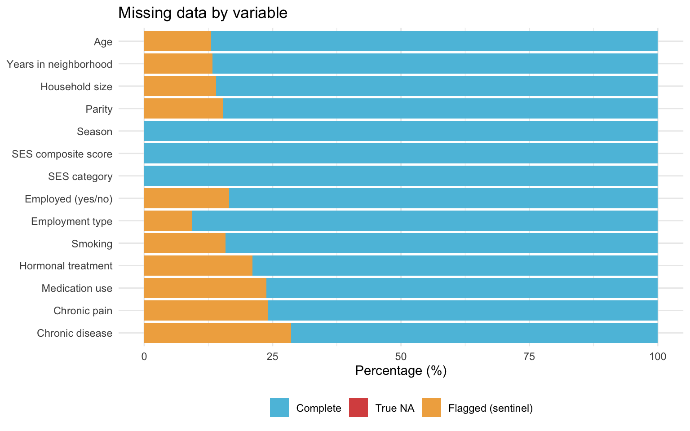
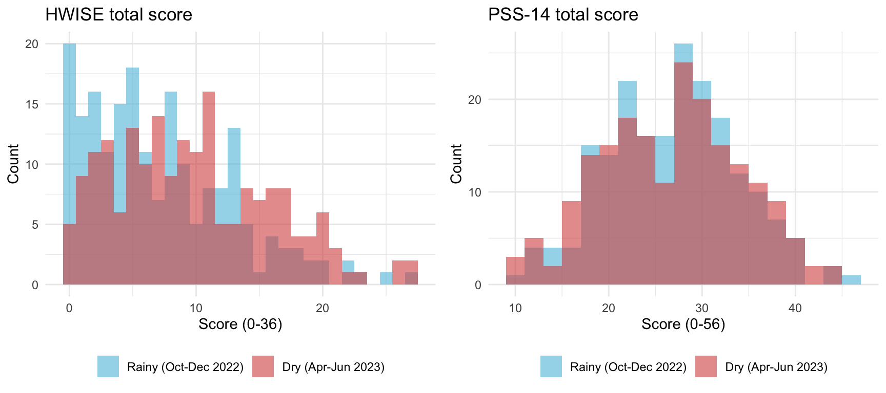
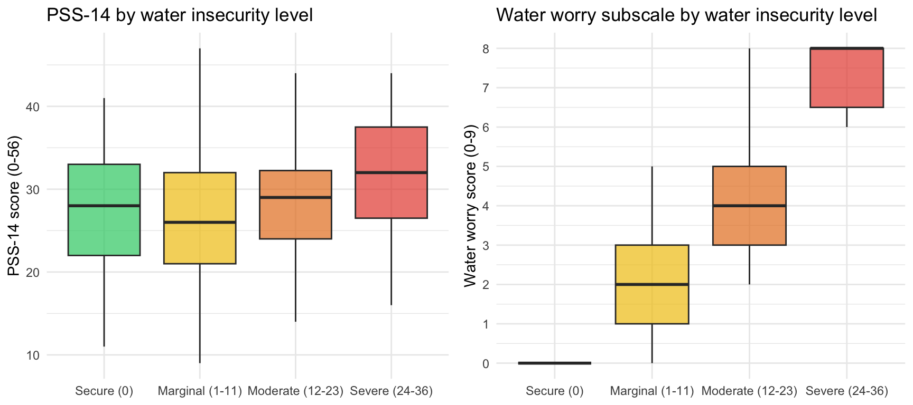

Last updated: 2026-03-12
Checks: 7 0
Knit directory: QUAIL-Mex/
This reproducible R Markdown analysis was created with workflowr (version 1.7.1). The Checks tab describes the reproducibility checks that were applied when the results were created. The Past versions tab lists the development history.
Great! Since the R Markdown file has been committed to the Git repository, you know the exact version of the code that produced these results.
Great job! The global environment was empty. Objects defined in the global environment can affect the analysis in your R Markdown file in unknown ways. For reproduciblity it’s best to always run the code in an empty environment.
The command set.seed(20241009) was run prior to running
the code in the R Markdown file. Setting a seed ensures that any results
that rely on randomness, e.g. subsampling or permutations, are
reproducible.
Great job! Recording the operating system, R version, and package versions is critical for reproducibility.
Nice! There were no cached chunks for this analysis, so you can be confident that you successfully produced the results during this run.
Great job! Using relative paths to the files within your workflowr project makes it easier to run your code on other machines.
Great! You are using Git for version control. Tracking code development and connecting the code version to the results is critical for reproducibility.
The results in this page were generated with repository version 21e9e56. See the Past versions tab to see a history of the changes made to the R Markdown and HTML files.
Note that you need to be careful to ensure that all relevant files for
the analysis have been committed to Git prior to generating the results
(you can use wflow_publish or
wflow_git_commit). workflowr only checks the R Markdown
file, but you know if there are other scripts or data files that it
depends on. Below is the status of the Git repository when the results
were generated:
Ignored files:
Ignored: .DS_Store
Ignored: .RData
Ignored: .Rhistory
Ignored: .Rproj.user/
Ignored: analysis/.DS_Store
Ignored: analysis/.RData
Ignored: analysis/.Rhistory
Ignored: analysis/Hrs_by_HWISE score.png
Ignored: analysis/stacked_barplot.png
Ignored: code/.DS_Store
Ignored: data/.DS_Store
Untracked files:
Untracked: data.plugin
Note that any generated files, e.g. HTML, png, CSS, etc., are not included in this status report because it is ok for generated content to have uncommitted changes.
These are the previous versions of the repository in which changes were
made to the R Markdown (analysis/04.Descriptive_stats.Rmd)
and HTML (docs/04.Descriptive_stats.html) files. If you’ve
configured a remote Git repository (see ?wflow_git_remote),
click on the hyperlinks in the table below to view the files as they
were in that past version.
| File | Version | Author | Date | Message |
|---|---|---|---|---|
| Rmd | 7c773aa | Paloma | 2026-03-10 | Merge2.0 |
This document produces descriptive statistics for the merged dataset
(Merged_Screening_HWISE_PSS.csv, produced by
Data_merge_HWISE_PSS.Rmd). It includes:
A comprehensive descriptive statistics table (all analytic variables)
A filtered table with only the variables relevant to the manuscript
HWISE and PSS descriptive statistics (overall and by season)
Sample characteristics stratified by water insecurity level (HWISE categories)
A missing data summary table
library(dplyr)
library(tidyr)
library(stringr)
library(gtsummary)
library(gt)
library(ggplot2)
data_path <- "./data"
MISSING_CODES <- c(999, 888, 777, 666, 555, 444, 333)
# Helper: convert sentinel codes and recode to NA for descriptive stats
# Sentinel-coded values are treated as NA in tables (they are not true responses)
clean_for_table <- function(x) {
x_num <- suppressWarnings(as.numeric(as.character(x)))
ifelse(x_num %in% MISSING_CODES | is.na(x_num), NA, x_num)
}df <- read.csv(file.path(data_path, "Merged_Screening_HWISE_PSS.csv"),
stringsAsFactors = FALSE,
na.strings = c(""))
cat("Dimensions:", dim(df), "\n")Dimensions: 399 102 cat("Participants:", nrow(df), "\n")Participants: 399 Select and recode variables for the descriptive table. All sentinel codes are converted to NA here since they represent non-informative responses for descriptive purposes.
df_table <- df %>%
mutate(
# --- Demographics ---
Age = clean_for_table(D_AGE),
Yrs_in_nbhd = clean_for_table(D_LOC_TIME_CLEAN),
HH_size = clean_for_table(D_HH_SIZE),
Parity = clean_for_table(D_CHLD_CLEAN),
# --- Season ---
Season = factor(SEASON,
levels = c(0, 1),
labels = c("Rainy (Oct-Dec 2022)", "Dry (Apr-Jun 2023)")),
# --- SES ---
SES_Total = clean_for_table(SES_SC_Total),
SES_Category = factor(SES_CAT_AMAI,
levels = c("E", "D-", "D+", "C-", "C", "C+", "AB"),
ordered = TRUE),
# --- Employment ---
Employed = factor(clean_for_table(D_EMP_CLEAN),
levels = c(0, 1),
labels = c("No", "Yes")),
Employment_type = factor(clean_for_table(D_EMP_FORM_CLEAN),
levels = c(0, 1),
labels = c("Informal", "Formal")),
# --- Health ---
Smoking = factor(clean_for_table(HLTH_SMK_CLEAN),
levels = c(0, 1, 2),
labels = c("No", "Yes", "Occasionally")),
Hormonal_tx = factor(clean_for_table(HLTH_TTM_CLEAN),
levels = c(0, 1), labels = c("No", "Yes")),
Medication = factor(clean_for_table(HLTH_MED_CLEAN),
levels = c(0, 1), labels = c("No", "Yes")),
Chronic_pain = factor(clean_for_table(HLTH_CPAIN_CLEAN),
levels = c(0, 1), labels = c("No", "Yes")),
Chronic_dis = factor(clean_for_table(HLTH_CDIS_CLEAN),
levels = c(0, 1), labels = c("No", "Yes")),
# --- HWISE ---
HWISE_Total = clean_for_table(HW_TOTAL),
# Standard HWISE categories (Young et al. 2019, BMJ Global Health)
# 0 = secure; 1-11 = marginal; 12-23 = moderate; 24-36 = severe
HWISE_Cat = factor(
case_when(
is.na(clean_for_table(HW_TOTAL)) ~ NA_character_,
clean_for_table(HW_TOTAL) == 0 ~ "Secure (0)",
clean_for_table(HW_TOTAL) <= 11 ~ "Marginal (1-11)",
clean_for_table(HW_TOTAL) <= 23 ~ "Moderate (12-23)",
TRUE ~ "Severe (24-36)"
),
levels = c("Secure (0)", "Marginal (1-11)",
"Moderate (12-23)", "Severe (24-36)")
),
Water_worry = clean_for_table(HW_WORRY_SUB),
# --- PSS-14 ---
PSS_Total = clean_for_table(PSS_TOTAL),
# Tertile-based PSS categories
PSS_Cat = factor(
case_when(
is.na(clean_for_table(PSS_TOTAL)) ~ NA_character_,
clean_for_table(PSS_TOTAL) <= 22 ~ "Low stress (≤22)",
clean_for_table(PSS_TOTAL) <= 31 ~ "Moderate stress (23-31)",
TRUE ~ "High stress (≥32)"
),
levels = c("Low stress (≤22)", "Moderate stress (23-31)",
"High stress (≥32)")
)
)
head(df_table) ID D_YRBR D_AGE D_LOC D_LOC_CODE D_LOC_TIME
1 1 1987 35 NA NA 35
2 2 1990 32 NA NA 32
3 3 1992 30 Miguel de la Madrid NA 8
4 4 1982 40 Lomas de Zaragoza NA 32
5 5 1976 46 NA NA 45
6 6 1990 32 Ixtlahuacan NA 8
D_LOC_INFO
1 NA
2 Dije si de vive en esta colonia pero no escribo la colonia
3 Su esposo por 35 ha vivido en la colonia
4 NA
5 NA
6 NA
HLTH_SMK HLTH_TTM
1 No No
2 Yes No
3 No No
4 No No
5 No No
6 a veces/ una vez por semana no
HLTH_MED HLTH_CPAIN HLTH_CPAIN_CAT
1 No No NA
2 Yes, Loratadina/ Betolmetasona Urticaria No NA
3 No No NA
4 No No NA
5 Yes,omeprazol y medicamento para pie de atleta Yes NA
6 no No NA
HLTH_CDIS
1 Tuve colesterol elevado hace dos semanas hice estudios y salio normal
2 No
3 No
4 No
5 Dolor cronico de talon y Dolor de cabeza (migrana)\n- no enfermedad cronica
6 no
HLTH_CDIS_CAT D_HH_SIZE D_HH_SIZE_INFO D_CHLD
1 NA 4 NA 0
2 NA 12 NA 2
3 NA 7 7/ un tinaco | Usan un Tinaco 2
4 NA 4 NA 1
5 NA 4 NA 333
6 NA 6 NA 1
D_EMP_TYPE D_EMP_DAYS W_HH_SIZE
1 Yes,venta de productos NA NA
2 Yes,comerciante NA NA
3 No, antes viendia comida en escuela NA NA
4 Administrativo esparadico local de productos de calzado NA NA
5 Ama de cas NA NA
6 Yes,witatechnologia- 1 dia a la semana NA NA
W_STORAGE D_INFO
1 NA NA
2 NA NA
3 NA Antes vendia comida en la escuela | 20221024 133411
4 NA grabacion: 152615
5 NA grabacion: 221019, 4 personas \n6 dias x semana, cavi todo el dia
6 NA NA
SES_EDU_CAT SES_EDU_SC SES_BTHR_CAT SES_BTHR_SC SES_CAR_CAT
1 Primaria incompleta 10 1 bathroom 24 0 cars
2 Secundaria completa 31 2 o more bathrooms 47 1 car
3 Secundaria completa 31 0 bathrooms 0 0 cars
4 Licenciatura completa 73 2 o more bathrooms 47 0 cars
5 Preparatoria incompleta 35 1 bathroom 24 0 cars
6 Licenciatura completa 73 2 o more bathrooms 47 0 cars
SES_CAR_SC SES_INT_CAT SES_INT_SC SES_WRK_CAT SES_WRK_SC SES_BEDR_CAT
1 0 SI 31 4 o mas personas 61 4 cuartos o mas
2 18 SI 31 3 personas 46 4 cuartos o mas
3 0 NO 0 1 persona 15 1 cuarto
4 0 SI 31 3 personas 46 3 cuartos
5 0 SI 31 1 persona 15 2 cuartos
6 0 SI 31 3 personas 46 4 cuartos o mas
SES_BEDR_SC SES_INFO HLTH_TTM_RAW
1 23 NA No
2 23 NA No
3 6 NA No
4 17 diario, 8 am 12 pm No
5 12 NA No
6 23 NA no
HLTH_MED_RAW HLTH_CPAIN_RAW
1 No No
2 Yes, Loratadina/ Betolmetasona Urticaria No
3 No No
4 No No
5 Yes,omeprazol y medicamento para pie de atleta Yes
6 no No
HLTH_CDIS_RAW
1 Tuve colesterol elevado hace dos semanas hice estudios y salio normal
2 No
3 No
4 No
5 Dolor cronico de talon y Dolor de cabeza (migrana)\n- no enfermedad cronica
6 no
HLTH_SMK_RAW
1 No
2 Yes
3 No
4 No
5 No
6 a veces/ una vez por semana
D_EMP_TYPE_RAW D_CHLD_RAW SEASON
1 Yes,venta de productos 0 0
2 Yes,comerciante 2 0
3 No, antes viendia comida en escuela 2 0
4 Administrativo esparadico local de productos de calzado 1 0
5 Ama de cas 333 0
6 Yes,witatechnologia- 1 dia a la semana 1 0
HLTH_TTM_CLEAN HLTH_MED_CLEAN HLTH_CPAIN_CLEAN HLTH_CDIS_CLEAN HLTH_SMK_CLEAN
1 0 0 0 555 0
2 0 1 0 0 1
3 0 0 0 0 0
4 0 0 0 0 0
5 0 1 1 555 0
6 0 0 0 0 2
HLTH_SMK_CAT D_EMP_CLEAN D_EMP_FORM_CLEAN D_CHLD_CLEAN D_LOC_TIME_RAW
1 No 1 555 0 35
2 Yes 1 0 2 32
3 No 0 NA 2 8
4 No 1 555 1 32
5 No 1 555 333 45
6 Occasionally 1 555 1 8
D_LOC_TIME_CLEAN SES_EDU_SC_RAW SES_BTHR_SC_RAW SES_CAR_SC_RAW SES_INT_SC_RAW
1 35 10 24 0 31
2 32 31 47 18 31
3 8 31 0 0 0
4 32 73 47 0 31
5 45 35 24 0 31
6 8 73 47 0 31
SES_WRK_SC_RAW SES_BEDR_SC_RAW SES_SC_Total SES_CAT_AMAI W_WS_LOC HW_WORRY
1 61 23 149 C WI 2
2 46 23 196 C+ WI 0
3 15 6 52 D- WI 0
4 46 17 214 AB WI 0
5 15 12 117 C- WI 2
6 46 23 220 AB WI 1
HW_INTERR HW_CLOTHES HW_PLANS HW_FOOD HW_HANDS HW_BODY HW_DRINK HW_ANGRY
1 0 0 0 0 0 0 0 1
2 0 0 0 0 0 1 0 2
3 0 0 0 0 0 0 0 1
4 0 0 0 0 0 0 0 1
5 1 1 1 1 0 1 0 1
6 1 2 1 3 1 1 0 1
HW_SLEEP HW_NONE HW_SHAME HW_TOTAL HW_WORRY_SUB
1 0 1 0 4 3
2 0 2 0 5 2
3 0 0 0 1 1
4 0 0 1 2 2
5 0 3 1 12 4
6 0 2 2 15 4
HW_INFO
1 NA
2 NA
3 NA
4 6: pasa en los parques pueblos donde no hay agua 9: cuando su esposo a la marcha 12: x que ya todos saben que no hay agua
5 NA
6 NA
PSS1 PSS2 PSS3 PSS8 PSS11 PSS12 PSS14 PSS4 PSS5 PSS6 PSS7 PSS9 PSS10 PSS13
1 2 3 2 1 1 4 1 4 3 2 2 2 3 2
2 2 2 3 2 2 4 2 3 3 4 3 3 2 3
3 2 2 2 2 2 2 2 2 2 3 3 3 2 3
4 2 3 2 1 2 2 1 3 3 3 3 3 2 3
5 2 2 3 2 3 3 3 2 2 2 3 2 1 2
6 2 2 3 1 2 3 2 2 3 3 4 3 3 1
PSS4_REV PSS5_REV PSS6_REV PSS7_REV PSS9_REV PSS10_REV PSS13_REV PSS_TOTAL
1 0 1 2 2 2 1 2 24
2 1 1 0 1 1 2 1 24
3 2 2 1 1 1 2 1 24
4 1 1 1 1 1 2 1 21
5 2 2 2 1 2 3 2 32
6 2 1 1 0 1 1 3 24
PSS_REVIEW_FLAG PSS_INFO Age Yrs_in_nbhd HH_size Parity
1 0 13-18=-5 35 35 4 0
2 0 17-21=-4 32 32 12 2
3 0 0 30 8 7 2
4 1 13-20=-7, Revisar! 40 32 4 1
5 0 18-14= 4 46 45 4 NA
6 0 -4 32 8 6 1
Season SES_Total SES_Category Employed Employment_type
1 Rainy (Oct-Dec 2022) 149 C Yes <NA>
2 Rainy (Oct-Dec 2022) 196 C+ Yes Informal
3 Rainy (Oct-Dec 2022) 52 D- No <NA>
4 Rainy (Oct-Dec 2022) 214 AB Yes <NA>
5 Rainy (Oct-Dec 2022) 117 C- Yes <NA>
6 Rainy (Oct-Dec 2022) 220 AB Yes <NA>
Smoking Hormonal_tx Medication Chronic_pain Chronic_dis HWISE_Total
1 No No No No <NA> 4
2 Yes No Yes No No 5
3 No No No No No 1
4 No No No No No 2
5 No No Yes Yes <NA> 12
6 Occasionally No No No No 15
HWISE_Cat Water_worry PSS_Total PSS_Cat
1 Marginal (1-11) 3 24 Moderate stress (23-31)
2 Marginal (1-11) 2 24 Moderate stress (23-31)
3 Marginal (1-11) 1 24 Moderate stress (23-31)
4 Marginal (1-11) 2 21 Low stress (≤22)
5 Moderate (12-23) 4 32 High stress (≥32)
6 Moderate (12-23) 4 24 Moderate stress (23-31)Includes all analytic variables to inspect the full sample before deciding what to include in the manuscript table.
tbl_full <- df_table %>%
select(
# Demographics
Season, Age, Yrs_in_nbhd, HH_size, Parity,
# SES
SES_Total, SES_Category,
# Employment
Employed, Employment_type,
# Health
Smoking, Hormonal_tx, Medication, Chronic_pain, Chronic_dis,
# Water insecurity
HWISE_Total, HWISE_Cat, Water_worry,
# Perceived stress
PSS_Total, PSS_Cat
) %>%
tbl_summary(
statistic = list(
all_continuous() ~ "{mean} ({sd}) / {median} [{p25}, {p75}]",
all_categorical() ~ "{n} ({p}%)"
),
digits = list(all_continuous() ~ 1),
missing = "no", # missing handled in separate table
label = list(
Season ~ "Season of data collection",
Age ~ "Age (years)",
Yrs_in_nbhd ~ "Years in neighborhood",
HH_size ~ "Household size (n persons)",
Parity ~ "Number of children",
SES_Total ~ "SES composite score (NSE-AMAI)",
SES_Category ~ "SES category (NSE-AMAI)",
Employed ~ "Currently employed",
Employment_type ~ "Employment type (among employed)",
Smoking ~ "Smoking status",
Hormonal_tx ~ "Hormonal treatment",
Medication ~ "Regular medication use",
Chronic_pain ~ "Chronic pain",
Chronic_dis ~ "Chronic disease",
HWISE_Total ~ "HWISE total score (0–36)",
HWISE_Cat ~ "Water insecurity level",
Water_worry ~ "Water worry subscale (0–9)",
PSS_Total ~ "PSS-14 total score (0–56)",
PSS_Cat ~ "Perceived stress level"
)
) %>%
bold_labels() %>%
modify_caption("**Table S1. Comprehensive descriptive statistics (n = {N})**")
tbl_full| Characteristic | N = 3991 |
|---|---|
| Season of data collection | |
| Rainy (Oct-Dec 2022) | 202 (51%) |
| Dry (Apr-Jun 2023) | 197 (49%) |
| Age (years) | 32.4 (7.4) / 32.0 [27.0, 38.0] |
| Years in neighborhood | 22.4 (11.5) / 23.0 [12.0, 31.0] |
| Household size (n persons) | 5.7 (3.6) / 5.0 [4.0, 6.5] |
| Number of children | |
| 0 | 48 (15%) |
| 1 | 72 (22%) |
| 2 | 120 (37%) |
| 3 | 59 (18%) |
| 4 | 18 (5.6%) |
| 5 | 6 (1.9%) |
| 6 | 1 (0.3%) |
| SES composite score (NSE-AMAI) | 133.7 (44.8) / 129.5 [105.0, 159.0] |
| SES category (NSE-AMAI) | |
| E | 8 (2.6%) |
| D- | 42 (14%) |
| D+ | 45 (15%) |
| C- | 71 (23%) |
| C | 72 (24%) |
| C+ | 43 (14%) |
| AB | 23 (7.6%) |
| Currently employed | 220 (69%) |
| Employment type (among employed) | |
| Informal | 21 (11%) |
| Formal | 162 (89%) |
| Smoking status | |
| No | 232 (72%) |
| Yes | 76 (24%) |
| Occasionally | 13 (4.0%) |
| Hormonal treatment | 6 (2.0%) |
| Regular medication use | 13 (4.5%) |
| Chronic pain | 47 (16%) |
| Chronic disease | 0 (0%) |
| HWISE total score (0–36) | 8.4 (6.1) / 8.0 [3.0, 12.0] |
| Water insecurity level | |
| Secure (0) | 25 (6.4%) |
| Marginal (1-11) | 254 (65%) |
| Moderate (12-23) | 104 (27%) |
| Severe (24-36) | 6 (1.5%) |
| Water worry subscale (0–9) | |
| 0 | 68 (17%) |
| 1 | 68 (17%) |
| 2 | 84 (21%) |
| 3 | 63 (16%) |
| 4 | 58 (15%) |
| 5 | 30 (7.6%) |
| 6 | 12 (3.1%) |
| 7 | 4 (1.0%) |
| 8 | 6 (1.5%) |
| PSS-14 total score (0–56) | 27.3 (7.2) / 28.0 [22.0, 32.0] |
| Perceived stress level | |
| Low stress (≤22) | 102 (26%) |
| Moderate stress (23-31) | 179 (46%) |
| High stress (≥32) | 112 (28%) |
| 1 n (%); Mean (SD) / Median [Q1, Q3] | |
Contains only variables directly relevant to the paper (for now). Stratified by season to show comparability across data collection waves.
tbl_ms <- df_table %>%
select(
Season, Age, Yrs_in_nbhd, HH_size, Parity,
SES_Total, SES_Category,
Employed, Employment_type,
Smoking, Chronic_pain, Chronic_dis
) %>%
tbl_summary(
by = Season,
statistic = list(
all_continuous() ~ "{mean} ({sd})",
all_categorical() ~ "{n} ({p}%)"
),
digits = list(all_continuous() ~ 1),
missing = "no",
label = list(
Age ~ "Age (years)",
Yrs_in_nbhd ~ "Years in neighborhood",
HH_size ~ "Household size",
Parity ~ "Parity (n children)",
SES_Total ~ "SES score (NSE-AMAI)",
SES_Category ~ "SES category",
Employed ~ "Employed",
Employment_type ~ "Employment type",
Smoking ~ "Smoking",
Chronic_pain ~ "Chronic pain",
Chronic_dis ~ "Chronic disease"
)
) %>%
add_overall() %>%
add_p(test = list(
all_continuous() ~ "t.test",
all_categorical() ~ "chisq.test"
)) %>%
bold_labels() %>%
modify_spanning_header(c("stat_1", "stat_2") ~ "**Season of data collection**") %>%
modify_caption("**Table 1. Sample characteristics by season (n = {N})**")The following errors were returned during `modify_caption()`:
✖ For variable `Chronic_dis` (`Season`) and "statistic", "p.value", and
"parameter" statistics: 'x' and 'y' must have at least 2 levels
The following warnings were returned during `modify_caption()`:
! For variable `Parity` (`Season`) and "statistic", "p.value", and "parameter"
statistics: Chi-squared approximation may be incorrect
! For variable `SES_Category` (`Season`) and "statistic", "p.value", and
"parameter" statistics: Chi-squared approximation may be incorrecttbl_ms| Characteristic | Overall N = 3991 |
Season of data collection
|
p-value2 | |
|---|---|---|---|---|
| Rainy (Oct-Dec 2022) N = 2021 |
Dry (Apr-Jun 2023) N = 1971 |
|||
| Age (years) | 32.4 (7.4) | 33.2 (7.1) | 31.2 (7.7) | 0.014 |
| Years in neighborhood | 22.4 (11.5) | 22.8 (11.3) | 21.9 (11.8) | 0.5 |
| Household size | 5.7 (3.6) | 6.7 (4.3) | 4.3 (1.7) | <0.001 |
| Parity (n children) | 0.5 | |||
| 0 | 48 (15%) | 24 (12%) | 24 (19%) | |
| 1 | 72 (22%) | 46 (24%) | 26 (20%) | |
| 2 | 120 (37%) | 69 (35%) | 51 (40%) | |
| 3 | 59 (18%) | 39 (20%) | 20 (16%) | |
| 4 | 18 (5.6%) | 11 (5.6%) | 7 (5.4%) | |
| 5 | 6 (1.9%) | 5 (2.6%) | 1 (0.8%) | |
| 6 | 1 (0.3%) | 1 (0.5%) | 0 (0%) | |
| SES score (NSE-AMAI) | 133.7 (44.8) | 138.9 (46.5) | 126.1 (41.3) | 0.012 |
| SES category | 0.14 | |||
| E | 8 (2.6%) | 4 (2.2%) | 4 (3.2%) | |
| D- | 42 (14%) | 20 (11%) | 22 (18%) | |
| D+ | 45 (15%) | 25 (14%) | 20 (16%) | |
| C- | 71 (23%) | 44 (25%) | 27 (22%) | |
| C | 72 (24%) | 38 (21%) | 34 (27%) | |
| C+ | 43 (14%) | 30 (17%) | 13 (10%) | |
| AB | 23 (7.6%) | 18 (10%) | 5 (4.0%) | |
| Employed | 220 (69%) | 135 (70%) | 85 (67%) | 0.7 |
| Employment type | 0.3 | |||
| Informal | 21 (11%) | 15 (14%) | 6 (7.9%) | |
| Formal | 162 (89%) | 92 (86%) | 70 (92%) | |
| Smoking | 0.11 | |||
| No | 232 (72%) | 140 (73%) | 92 (71%) | |
| Yes | 76 (24%) | 41 (21%) | 35 (27%) | |
| Occasionally | 13 (4.0%) | 11 (5.7%) | 2 (1.6%) | |
| Chronic pain | 47 (16%) | 30 (17%) | 17 (15%) | 0.7 |
| Chronic disease | 0 (0%) | 0 (0%) | 0 (0%) | |
| 1 Mean (SD); n (%) | ||||
| 2 Welch Two Sample t-test; Pearson’s Chi-squared test; NA | ||||
Reports true NAs and sentinel-coded values separately for all analytic variables. Include as supplementary table in dissertation; summarize in-text for the journal manuscript.
# Variables to include in missing data report
analytic_cols <- c(
"D_AGE", "D_LOC_TIME_CLEAN", "D_HH_SIZE", "D_CHLD_CLEAN",
"SEASON", "SES_SC_Total", "SES_CAT_AMAI",
"D_EMP_CLEAN", "D_EMP_FORM_CLEAN",
"HLTH_SMK_CLEAN", "HLTH_TTM_CLEAN", "HLTH_MED_CLEAN",
"HLTH_CPAIN_CLEAN", "HLTH_CDIS_CLEAN"
)
# Readable labels
var_labels <- c(
D_AGE = "Age",
D_LOC_TIME_CLEAN = "Years in neighborhood",
D_HH_SIZE = "Household size",
D_CHLD_CLEAN = "Parity",
SEASON = "Season",
SES_SC_Total = "SES composite score",
SES_CAT_AMAI = "SES category",
D_EMP_CLEAN = "Employed (yes/no)",
D_EMP_FORM_CLEAN = "Employment type",
HLTH_SMK_CLEAN = "Smoking",
HLTH_TTM_CLEAN = "Hormonal treatment",
HLTH_MED_CLEAN = "Medication use",
HLTH_CPAIN_CLEAN = "Chronic pain",
HLTH_CDIS_CLEAN = "Chronic disease"
)
N <- nrow(df)
missing_tbl <- df %>%
select(all_of(analytic_cols)) %>%
summarise(across(everything(), list(
n_na = ~ sum(is.na(.)),
n_999 = ~ sum(as.character(.) == "999", na.rm = TRUE),
n_888 = ~ sum(as.character(.) == "888", na.rm = TRUE),
n_777 = ~ sum(as.character(.) == "777", na.rm = TRUE),
n_666 = ~ sum(as.character(.) == "666", na.rm = TRUE),
n_555 = ~ sum(as.character(.) == "555", na.rm = TRUE),
n_444 = ~ sum(as.character(.) == "444", na.rm = TRUE),
n_333 = ~ sum(as.character(.) == "333", na.rm = TRUE)
))) %>%
pivot_longer(everything(),
names_to = c("variable", ".value"),
names_sep = "_(?=n_)") %>%
mutate(
label = var_labels[variable],
n_total = N,
pct_na = round(n_na / N * 100, 1),
n_flagged = n_999 + n_888 + n_777 + n_666 + n_555 + n_444 + n_333,
pct_flagged = round(n_flagged / N * 100, 1),
n_complete = N - n_na - n_flagged,
pct_complete = round(n_complete / N * 100, 1)
) %>%
select(label, n_complete, pct_complete,
n_na, pct_na,
n_flagged, pct_flagged,
n_999, n_888, n_777, n_666, n_555, n_444, n_333) %>%
arrange(desc(n_na))
# Print full missing table
missing_tbl %>%
gt() %>%
tab_header(title = "Missing Data Summary") %>%
tab_spanner(label = "Complete", columns = c(n_complete, pct_complete)) %>%
tab_spanner(label = "True NA", columns = c(n_na, pct_na)) %>%
tab_spanner(label = "Flagged", columns = c(n_flagged, pct_flagged)) %>%
tab_spanner(label = "Sentinel code breakdown",
columns = c(n_999, n_888, n_777, n_666, n_555, n_444, n_333)) %>%
cols_label(
label = "Variable",
n_complete = "n", pct_complete = "%",
n_na = "n", pct_na = "%",
n_flagged = "n", pct_flagged = "%",
n_999 = "999", n_888 = "888", n_777 = "777", n_666 = "666",
n_555 = "555", n_444 = "444", n_333 = "333"
) %>%
fmt_number(columns = where(is.numeric), decimals = 0) %>%
tab_footnote(
footnote = "999=Missing/lost, 888=Don't know, 777=Refused, 666=Illegible, 555=Other, 444=Ambiguous, 333=Pending"
)| Missing Data Summary | |||||||||||||
| Variable |
Complete
|
True NA
|
Flagged
|
Sentinel code breakdown
|
|||||||||
|---|---|---|---|---|---|---|---|---|---|---|---|---|---|
| n | % | n | % | n | % | 999 | 888 | 777 | 666 | 555 | 444 | 333 | |
| Age | 347 | 87 | 0 | 0 | 52 | 13 | 52 | 0 | 0 | 0 | 0 | 0 | 0 |
| Years in neighborhood | 346 | 87 | 0 | 0 | 53 | 13 | 51 | 0 | 0 | 0 | 1 | 1 | 0 |
| Household size | 343 | 86 | 0 | 0 | 56 | 14 | 52 | 0 | 0 | 0 | 0 | 4 | 0 |
| Parity | 338 | 85 | 0 | 0 | 61 | 15 | 52 | 0 | 0 | 0 | 3 | 4 | 2 |
| Season | 399 | 100 | 0 | 0 | 0 | 0 | 0 | 0 | 0 | 0 | 0 | 0 | 0 |
| SES composite score | 399 | 100 | 0 | 0 | 0 | 0 | 0 | 0 | 0 | 0 | 0 | 0 | 0 |
| SES category | 399 | 100 | 0 | 0 | 0 | 0 | 0 | 0 | 0 | 0 | 0 | 0 | 0 |
| Employed (yes/no) | 333 | 84 | 0 | 0 | 66 | 16 | 52 | 0 | 0 | 0 | 8 | 6 | 0 |
| Employment type | 362 | 91 | 0 | 0 | 37 | 9 | 0 | 0 | 0 | 0 | 37 | 0 | 0 |
| Smoking | 336 | 84 | 0 | 0 | 63 | 16 | 51 | 0 | 0 | 0 | 9 | 3 | 0 |
| Hormonal treatment | 315 | 79 | 0 | 0 | 84 | 21 | 52 | 0 | 0 | 0 | 32 | 0 | 0 |
| Medication use | 304 | 76 | 0 | 0 | 95 | 24 | 52 | 0 | 0 | 0 | 42 | 1 | 0 |
| Chronic pain | 303 | 76 | 0 | 0 | 96 | 24 | 52 | 0 | 0 | 0 | 43 | 1 | 0 |
| Chronic disease | 285 | 71 | 0 | 0 | 114 | 29 | 52 | 0 | 0 | 0 | 60 | 2 | 0 |
| 999=Missing/lost, 888=Don't know, 777=Refused, 666=Illegible, 555=Other, 444=Ambiguous, 333=Pending | |||||||||||||
missing_tbl %>%
select(label, pct_complete, pct_na, pct_flagged) %>%
pivot_longer(-label, names_to = "type", values_to = "pct") %>%
mutate(type = factor(type,
levels = c("pct_complete", "pct_na", "pct_flagged"),
labels = c("Complete", "True NA", "Flagged (sentinel)")),
label = factor(label, levels = rev(missing_tbl$label))) %>%
ggplot(aes(x = label, y = pct, fill = type)) +
geom_col() +
coord_flip() +
scale_fill_manual(values = c("Complete" = "#5bc0de",
"True NA" = "#d9534f",
"Flagged (sentinel)" = "#f0ad4e")) +
labs(title = "Missing data by variable",
x = NULL, y = "Percentage (%)", fill = NULL) +
theme_minimal() +
theme(legend.position = "bottom")
tbl_scores <- df_table %>%
select(HWISE_Total, HWISE_Cat, Water_worry, PSS_Total, PSS_Cat) %>%
tbl_summary(
statistic = list(
all_continuous() ~ "{mean} ({sd}) / {median} [{p25}, {p75}]",
all_categorical() ~ "{n} ({p}%)"
),
digits = list(all_continuous() ~ 1),
missing = "no",
label = list(
HWISE_Total ~ "HWISE total score (0-36)",
HWISE_Cat ~ "Water insecurity level",
Water_worry ~ "Water worry subscale (0-9)",
PSS_Total ~ "PSS-14 total score (0-56)",
PSS_Cat ~ "Perceived stress level"
)
) %>%
bold_labels() %>%
modify_caption("**Table. HWISE and PSS scores — full sample (n = {N})**")
tbl_scores| Characteristic | N = 3991 |
|---|---|
| HWISE total score (0-36) | 8.4 (6.1) / 8.0 [3.0, 12.0] |
| Water insecurity level | |
| Secure (0) | 25 (6.4%) |
| Marginal (1-11) | 254 (65%) |
| Moderate (12-23) | 104 (27%) |
| Severe (24-36) | 6 (1.5%) |
| Water worry subscale (0-9) | |
| 0 | 68 (17%) |
| 1 | 68 (17%) |
| 2 | 84 (21%) |
| 3 | 63 (16%) |
| 4 | 58 (15%) |
| 5 | 30 (7.6%) |
| 6 | 12 (3.1%) |
| 7 | 4 (1.0%) |
| 8 | 6 (1.5%) |
| PSS-14 total score (0-56) | 27.3 (7.2) / 28.0 [22.0, 32.0] |
| Perceived stress level | |
| Low stress (≤22) | 102 (26%) |
| Moderate stress (23-31) | 179 (46%) |
| High stress (≥32) | 112 (28%) |
| 1 Mean (SD) / Median [Q1, Q3]; n (%) | |
tbl_scores_season <- df_table %>%
select(Season, HWISE_Total, HWISE_Cat, Water_worry, PSS_Total, PSS_Cat) %>%
tbl_summary(
by = Season,
statistic = list(
all_continuous() ~ "{mean} ({sd})",
all_categorical() ~ "{n} ({p}%)"
),
digits = list(all_continuous() ~ 1),
missing = "no",
label = list(
HWISE_Total ~ "HWISE total score (0-36)",
HWISE_Cat ~ "Water insecurity level",
Water_worry ~ "Water worry subscale (0-9)",
PSS_Total ~ "PSS-14 total score (0-56)",
PSS_Cat ~ "Perceived stress level"
)
) %>%
add_overall() %>%
add_p(test = list(
all_continuous() ~ "t.test",
all_categorical() ~ "chisq.test"
)) %>%
bold_labels() %>%
modify_spanning_header(c("stat_1", "stat_2") ~ "**Season**") %>%
modify_caption("**Table. HWISE and PSS scores by season (n = {N})**")The following warnings were returned during `modify_caption()`:
! For variable `HWISE_Cat` (`Season`) and "statistic", "p.value", and
"parameter" statistics: Chi-squared approximation may be incorrect
! For variable `Water_worry` (`Season`) and "statistic", "p.value", and
"parameter" statistics: Chi-squared approximation may be incorrecttbl_scores_season| Characteristic | Overall N = 3991 |
Season
|
p-value2 | |
|---|---|---|---|---|
| Rainy (Oct-Dec 2022) N = 2021 |
Dry (Apr-Jun 2023) N = 1971 |
|||
| HWISE total score (0-36) | 8.4 (6.1) | 7.2 (5.8) | 9.7 (6.2) | <0.001 |
| Water insecurity level | 0.006 | |||
| Secure (0) | 25 (6.4%) | 20 (10%) | 5 (2.6%) | |
| Marginal (1-11) | 254 (65%) | 131 (66%) | 123 (64%) | |
| Moderate (12-23) | 104 (27%) | 44 (22%) | 60 (31%) | |
| Severe (24-36) | 6 (1.5%) | 2 (1.0%) | 4 (2.1%) | |
| Water worry subscale (0-9) | 0.003 | |||
| 0 | 68 (17%) | 40 (20%) | 28 (14%) | |
| 1 | 68 (17%) | 46 (23%) | 22 (11%) | |
| 2 | 84 (21%) | 42 (21%) | 42 (22%) | |
| 3 | 63 (16%) | 31 (16%) | 32 (16%) | |
| 4 | 58 (15%) | 19 (9.5%) | 39 (20%) | |
| 5 | 30 (7.6%) | 10 (5.0%) | 20 (10%) | |
| 6 | 12 (3.1%) | 8 (4.0%) | 4 (2.1%) | |
| 7 | 4 (1.0%) | 1 (0.5%) | 3 (1.5%) | |
| 8 | 6 (1.5%) | 2 (1.0%) | 4 (2.1%) | |
| PSS-14 total score (0-56) | 27.3 (7.2) | 27.4 (6.9) | 27.2 (7.5) | 0.8 |
| Perceived stress level | 0.8 | |||
| Low stress (≤22) | 102 (26%) | 50 (25%) | 52 (27%) | |
| Moderate stress (23-31) | 179 (46%) | 94 (47%) | 85 (44%) | |
| High stress (≥32) | 112 (28%) | 55 (28%) | 57 (29%) | |
| 1 Mean (SD); n (%) | ||||
| 2 Welch Two Sample t-test; Pearson’s Chi-squared test | ||||
library(gridExtra)
p_hwise <- ggplot(df_table %>% filter(!is.na(HWISE_Total)),
aes(x = HWISE_Total, fill = Season)) +
geom_histogram(binwidth = 1, position = "identity", alpha = 0.6) +
scale_fill_manual(values = c("Rainy (Oct-Dec 2022)" = "#5bc0de",
"Dry (Apr-Jun 2023)" = "#d9534f")) +
labs(title = "HWISE total score", x = "Score (0-36)", y = "Count", fill = NULL) +
theme_minimal() + theme(legend.position = "bottom")
p_pss <- ggplot(df_table %>% filter(!is.na(PSS_Total)),
aes(x = PSS_Total, fill = Season)) +
geom_histogram(binwidth = 2, position = "identity", alpha = 0.6) +
scale_fill_manual(values = c("Rainy (Oct-Dec 2022)" = "#5bc0de",
"Dry (Apr-Jun 2023)" = "#d9534f")) +
labs(title = "PSS-14 total score", x = "Score (0-56)", y = "Count", fill = NULL) +
theme_minimal() + theme(legend.position = "bottom")
grid.arrange(p_hwise, p_pss, ncol = 2)
Demographics and health variables stratified by HWISE category, using the standard cut-points from Young et al. (2019, BMJ Global Health): 0 = water secure; 1-11 = marginal; 12-23 = moderate; 24-36 = severe. One-way ANOVA used for continuous variables; chi-square for categorical.
tbl_by_hwise <- df_table %>%
filter(!is.na(HWISE_Cat)) %>%
select(
HWISE_Cat,
Age, Yrs_in_nbhd, HH_size, Parity,
SES_Total, SES_Category,
Employed, Smoking, Chronic_pain, Chronic_dis,
PSS_Total, PSS_Cat, Water_worry
) %>%
tbl_summary(
by = HWISE_Cat,
statistic = list(
all_continuous() ~ "{mean} ({sd})",
all_categorical() ~ "{n} ({p}%)"
),
digits = list(all_continuous() ~ 1),
missing = "no",
label = list(
Age ~ "Age (years)",
Yrs_in_nbhd ~ "Years in neighborhood",
HH_size ~ "Household size",
Parity ~ "Parity (n children)",
SES_Total ~ "SES score",
SES_Category ~ "SES category",
Employed ~ "Employed",
Smoking ~ "Smoking",
Chronic_pain ~ "Chronic pain",
Chronic_dis ~ "Chronic disease",
PSS_Total ~ "PSS-14 total score",
PSS_Cat ~ "Perceived stress level",
Water_worry ~ "Water worry subscale"
)
) %>%
add_overall() %>%
add_p(test = list(
all_continuous() ~ "aov",
all_categorical() ~ "chisq.test"
)) %>%
bold_labels() %>%
modify_spanning_header(c("stat_1", "stat_2", "stat_3", "stat_4") ~
"**Water insecurity level (HWISE)**") %>%
modify_caption("**Table. Sample characteristics by water insecurity level (n = {N})**")The following errors were returned during `modify_caption()`:
✖ For variable `Chronic_dis` (`HWISE_Cat`) and "statistic", "p.value", and
"parameter" statistics: 'x' and 'y' must have at least 2 levels
The following warnings were returned during `modify_caption()`:
! For variable `Age` (`HWISE_Cat`) and "statistic" and "p.value" statistics:
The test "aov" in `add_p(test)` was deprecated in gtsummary 2.0.0. ℹ The same
functionality is covered in "oneway.test" with argument `var.equal = TRUE`.
! For variable `Chronic_pain` (`HWISE_Cat`) and "statistic", "p.value", and
"parameter" statistics: Chi-squared approximation may be incorrect
! For variable `Employed` (`HWISE_Cat`) and "statistic", "p.value", and
"parameter" statistics: Chi-squared approximation may be incorrect
! For variable `HH_size` (`HWISE_Cat`) and "statistic" and "p.value"
statistics: The test "aov" in `add_p(test)` was deprecated in gtsummary
2.0.0. ℹ The same functionality is covered in "oneway.test" with argument
`var.equal = TRUE`.
! For variable `PSS_Cat` (`HWISE_Cat`) and "statistic", "p.value", and
"parameter" statistics: Chi-squared approximation may be incorrect
! For variable `PSS_Total` (`HWISE_Cat`) and "statistic" and "p.value"
statistics: The test "aov" in `add_p(test)` was deprecated in gtsummary
2.0.0. ℹ The same functionality is covered in "oneway.test" with argument
`var.equal = TRUE`.
! For variable `Parity` (`HWISE_Cat`) and "statistic", "p.value", and
"parameter" statistics: Chi-squared approximation may be incorrect
! For variable `SES_Category` (`HWISE_Cat`) and "statistic", "p.value", and
"parameter" statistics: Chi-squared approximation may be incorrect
! For variable `SES_Total` (`HWISE_Cat`) and "statistic" and "p.value"
statistics: The test "aov" in `add_p(test)` was deprecated in gtsummary
2.0.0. ℹ The same functionality is covered in "oneway.test" with argument
`var.equal = TRUE`.
! For variable `Smoking` (`HWISE_Cat`) and "statistic", "p.value", and
"parameter" statistics: Chi-squared approximation may be incorrect
! For variable `Water_worry` (`HWISE_Cat`) and "statistic", "p.value", and
"parameter" statistics: Chi-squared approximation may be incorrect
! For variable `Yrs_in_nbhd` (`HWISE_Cat`) and "statistic" and "p.value"
statistics: The test "aov" in `add_p(test)` was deprecated in gtsummary
2.0.0. ℹ The same functionality is covered in "oneway.test" with argument
`var.equal = TRUE`.tbl_by_hwise| Characteristic | Overall N = 3891 |
Water insecurity level (HWISE)
|
p-value2 | |||
|---|---|---|---|---|---|---|
| Secure (0) N = 251 |
Marginal (1-11) N = 2541 |
Moderate (12-23) N = 1041 |
Severe (24-36) N = 61 |
|||
| Age (years) | 32.3 (7.5) | 35.2 (6.5) | 32.0 (7.2) | 32.6 (8.2) | 24.8 (4.8) | 0.039 |
| Years in neighborhood | 22.5 (11.5) | 21.7 (12.3) | 22.4 (11.7) | 23.0 (10.9) | 16.5 (11.5) | 0.7 |
| Household size | 5.7 (3.7) | 5.4 (2.5) | 6.0 (4.0) | 5.4 (3.1) | 3.7 (1.5) | 0.5 |
| Parity (n children) | 0.13 | |||||
| 0 | 48 (15%) | 0 (0%) | 35 (17%) | 11 (13%) | 2 (50%) | |
| 1 | 70 (22%) | 11 (46%) | 40 (19%) | 19 (23%) | 0 (0%) | |
| 2 | 118 (37%) | 9 (38%) | 76 (36%) | 33 (40%) | 0 (0%) | |
| 3 | 58 (18%) | 3 (13%) | 43 (21%) | 10 (12%) | 2 (50%) | |
| 4 | 18 (5.6%) | 1 (4.2%) | 10 (4.8%) | 7 (8.5%) | 0 (0%) | |
| 5 | 6 (1.9%) | 0 (0%) | 4 (1.9%) | 2 (2.4%) | 0 (0%) | |
| 6 | 1 (0.3%) | 0 (0%) | 1 (0.5%) | 0 (0%) | 0 (0%) | |
| SES score | 133.7 (44.4) | 148.3 (40.2) | 133.7 (45.8) | 131.3 (41.8) | 102.7 (24.8) | 0.3 |
| SES category | 0.6 | |||||
| E | 7 (2.3%) | 1 (5.0%) | 4 (2.1%) | 2 (2.5%) | 0 (0%) | |
| D- | 42 (14%) | 0 (0%) | 30 (15%) | 11 (14%) | 1 (33%) | |
| D+ | 44 (15%) | 0 (0%) | 29 (15%) | 14 (18%) | 1 (33%) | |
| C- | 69 (23%) | 7 (35%) | 45 (23%) | 16 (20%) | 1 (33%) | |
| C | 72 (24%) | 6 (30%) | 44 (23%) | 22 (28%) | 0 (0%) | |
| C+ | 42 (14%) | 4 (20%) | 26 (13%) | 12 (15%) | 0 (0%) | |
| AB | 22 (7.4%) | 2 (10%) | 17 (8.7%) | 3 (3.8%) | 0 (0%) | |
| Employed | 217 (70%) | 17 (81%) | 135 (67%) | 63 (75%) | 2 (50%) | 0.3 |
| Smoking | >0.9 | |||||
| No | 227 (72%) | 18 (75%) | 148 (73%) | 59 (71%) | 2 (50%) | |
| Yes | 75 (24%) | 5 (21%) | 47 (23%) | 21 (25%) | 2 (50%) | |
| Occasionally | 13 (4.1%) | 1 (4.2%) | 9 (4.4%) | 3 (3.6%) | 0 (0%) | |
| Chronic pain | 45 (16%) | 6 (25%) | 21 (12%) | 17 (23%) | 1 (25%) | 0.068 |
| Chronic disease | 0 (0%) | 0 (0%) | 0 (0%) | 0 (0%) | 0 (0%) | |
| PSS-14 total score | 27.3 (7.2) | 27.0 (8.5) | 26.6 (7.3) | 28.8 (6.2) | 31.3 (10.0) | 0.037 |
| Perceived stress level | 0.12 | |||||
| Low stress (≤22) | 99 (26%) | 7 (28%) | 75 (30%) | 16 (15%) | 1 (17%) | |
| Moderate stress (23-31) | 176 (46%) | 10 (40%) | 110 (44%) | 54 (52%) | 2 (33%) | |
| High stress (≥32) | 110 (29%) | 8 (32%) | 65 (26%) | 34 (33%) | 3 (50%) | |
| Water worry subscale | <0.001 | |||||
| 0 | 68 (17%) | 25 (100%) | 43 (17%) | 0 (0%) | 0 (0%) | |
| 1 | 67 (17%) | 0 (0%) | 67 (26%) | 0 (0%) | 0 (0%) | |
| 2 | 83 (21%) | 0 (0%) | 76 (30%) | 7 (6.7%) | 0 (0%) | |
| 3 | 62 (16%) | 0 (0%) | 35 (14%) | 27 (26%) | 0 (0%) | |
| 4 | 58 (15%) | 0 (0%) | 28 (11%) | 30 (29%) | 0 (0%) | |
| 5 | 29 (7.5%) | 0 (0%) | 5 (2.0%) | 24 (23%) | 0 (0%) | |
| 6 | 12 (3.1%) | 0 (0%) | 0 (0%) | 10 (9.6%) | 2 (33%) | |
| 7 | 4 (1.0%) | 0 (0%) | 0 (0%) | 4 (3.8%) | 0 (0%) | |
| 8 | 6 (1.5%) | 0 (0%) | 0 (0%) | 2 (1.9%) | 4 (67%) | |
| 1 Mean (SD); n (%) | ||||||
| 2 One-way analysis of means; Pearson’s Chi-squared test; NA | ||||||
p_pss_hwise <- df_table %>%
filter(!is.na(HWISE_Cat) & !is.na(PSS_Total)) %>%
ggplot(aes(x = HWISE_Cat, y = PSS_Total, fill = HWISE_Cat)) +
geom_boxplot(alpha = 0.7, outlier.shape = 21) +
scale_fill_manual(values = c(
"Secure (0)" = "#2ecc71",
"Marginal (1-11)" = "#f1c40f",
"Moderate (12-23)" = "#e67e22",
"Severe (24-36)" = "#e74c3c"
)) +
labs(title = "PSS-14 by water insecurity level",
x = NULL, y = "PSS-14 score (0-56)") +
theme_minimal() + theme(legend.position = "none")
p_worry_hwise <- df_table %>%
filter(!is.na(HWISE_Cat) & !is.na(Water_worry)) %>%
ggplot(aes(x = HWISE_Cat, y = Water_worry, fill = HWISE_Cat)) +
geom_boxplot(alpha = 0.7, outlier.shape = 21) +
scale_fill_manual(values = c(
"Secure (0)" = "#2ecc71",
"Marginal (1-11)" = "#f1c40f",
"Moderate (12-23)" = "#e67e22",
"Severe (24-36)" = "#e74c3c"
)) +
scale_y_continuous(breaks = 0:9) +
labs(title = "Water worry subscale by water insecurity level",
x = NULL, y = "Water worry score (0-9)") +
theme_minimal() + theme(legend.position = "none")
grid.arrange(p_pss_hwise, p_worry_hwise, ncol = 2)
sessionInfo()R version 4.5.2 (2025-10-31)
Platform: aarch64-apple-darwin20
Running under: macOS Tahoe 26.3.1
Matrix products: default
BLAS: /System/Library/Frameworks/Accelerate.framework/Versions/A/Frameworks/vecLib.framework/Versions/A/libBLAS.dylib
LAPACK: /Library/Frameworks/R.framework/Versions/4.5-arm64/Resources/lib/libRlapack.dylib; LAPACK version 3.12.1
locale:
[1] en_US.UTF-8/en_US.UTF-8/en_US.UTF-8/C/en_US.UTF-8/en_US.UTF-8
time zone: America/Detroit
tzcode source: internal
attached base packages:
[1] stats graphics grDevices utils datasets methods base
other attached packages:
[1] gridExtra_2.3 ggplot2_4.0.0 gt_1.0.0 gtsummary_2.5.0
[5] stringr_1.5.1 tidyr_1.3.1 dplyr_1.2.0 workflowr_1.7.1
loaded via a namespace (and not attached):
[1] sass_0.4.10 generics_0.1.3 xml2_1.3.8 stringi_1.8.7
[5] digest_0.6.37 magrittr_2.0.3 evaluate_1.0.3 grid_4.5.2
[9] RColorBrewer_1.1-3 cards_0.7.1 fastmap_1.2.0 rprojroot_2.1.1
[13] jsonlite_2.0.0 processx_3.8.6 whisker_0.4.1 backports_1.5.0
[17] cardx_0.3.2 ps_1.9.1 promises_1.3.2 httr_1.4.7
[21] purrr_1.0.4 scales_1.4.0 jquerylib_0.1.4 cli_3.6.5
[25] rlang_1.1.7 litedown_0.7 commonmark_2.0.0 withr_3.0.2
[29] cachem_1.1.0 yaml_2.3.10 tools_4.5.2 httpuv_1.6.16
[33] broom_1.0.8 vctrs_0.7.1 R6_2.6.1 lifecycle_1.0.5
[37] git2r_0.36.2 fs_1.6.6 pkgconfig_2.0.3 callr_3.7.6
[41] pillar_1.10.2 bslib_0.9.0 later_1.4.2 gtable_0.3.6
[45] glue_1.8.0 Rcpp_1.0.14 xfun_0.52 tibble_3.2.1
[49] tidyselect_1.2.1 rstudioapi_0.17.1 knitr_1.50 farver_2.1.2
[53] htmltools_0.5.8.1 labeling_0.4.3 rmarkdown_2.29 compiler_4.5.2
[57] getPass_0.2-4 S7_0.2.0 markdown_2.0